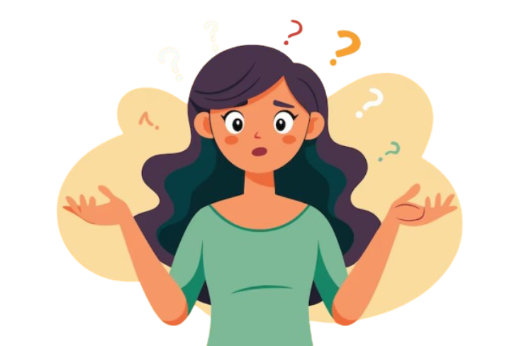

Happy (adj) = សប្បាយចិត្ត
Sad (adj) = ក្រៀមក្រំ
Angry (adj) = ខឹង
Excited (adj) = រំភើប
Nervous (adj) = បារម្ភ
Scared (adj) = ភ័យខ្លាច
Surprised (adj) = ភ្ញាក់ផ្អើល
Tired (adj) = អស់កម្លាំង
Bored (adj) = ធុញទ្រាន់
Confused (adj) = ស្រួលច្រឡំ
Lonely (adj) = ដាច់ដោយឡែក
Calm (adj) = ស្ងប់ស្ងាត់
Worried (adj) = បារម្ភ
Jealous (adj) = ច្រណែនចិត្ត
Proud (adj) = មោទនភាព
Shy (adj) = ល្ងីល្ងើ
Embarrassed (adj) = ខ្មាស
Relaxed (adj) = ផាសុខភាព
Grateful (adj) = អរគុណ
Hopeful (adj) = មានក្តីសង្ឃឹម
Frustrated (adj) = ខកចិត្ត
Confident (adj) = មានទំនុកចិត្ត
Annoyed (adj) = រំខាន
Curious (adj) = ចង់ដឹង
Excited (adj) = រីករាយ
Afraid (adj) = ខ្លាច
Angry (adj) = ខឹងខ្លាំង
Guilty (adj) = មានអារម្មណ៍រងទោស
Lonely (adj) = ឯកោ
Shocked (adj) = ដំណើរភ្ញាក់ផ្អើល
Hopeful (adj) = មានសង្ឃឹម
Optimistic (adj) = មានទស្សនៈវិជ្ជមាន
Pessimistic (adj) = មានទស្សនៈអវិជ្ជមាន
Relieved (adj) = ប្រាកដស្រួលចិត្ត
Stressed (adj) = មានសំពាធចិត្ត
Tense (adj) = ពិបាកចិត្ត
Confident (adj) = ទំនុកចិត្តខ្ពស់
Embarrassed (adj) = ខ្មាសមុខ
Shocked (adj) = ភ្ញាក់ផ្អើលខ្លាំង
Joyful (adj) = មានសេចក្តីរីករាយ
Lonely (adj) = ឯកោ
Angry (adj) = ខឹងខ្លាំង
Sad (adj) = ទុក្ខសោក
Excited (adj) = រំភើបចិត្ត
Relaxed (adj) = ស្រួលចិត្ត
Nervous (adj) = រំខានចិត្ត
Happy : Feeling good, joyful, or pleased.
Sad :Feeling unhappy or sorrowful.
Angry :Feeling mad or upset.
Excited :Feeling very happy and enthusiastic.
Nervous :Feeling worried or anxious.
Scared :Feeling afraid.
Surprised :Feeling shocked or amazed by something unexpected.
Tired :Feeling needing rest or sleep.
Bored :Feeling uninterested or tired of something.
Confused :Feeling unsure or not understanding something.
Lonely :Feeling unsure or not understanding something.
Calm :Feeling peaceful or relaxed.
Sad :Feeling anxious about something bad happening.
worried :Feeling unhappy or sorrowful.
Jealous :Feeling upset because someone else has something you want.
Pround :Feeling pleased about something you or someone did.
Shy :Feeling nervous around people.
Embarrassed :Feeling awkward or self-conscious.
Relax :Feeling comfortable and free from stress.
Grateful :Feeling thankful.
Hopeful :Feeling positive about the future.
Frustrated :Feeling annoyed because things aren’t going well.
Confident : Feeling sure about yourself.
Annoyed :Feeling slightly angry or bothered.
Curious :Wanting to learn or know something.
Afraid :Feeling fear.
Guilty :Feeling bad about something you did wrong.
Optimistic :Feelingpositive about the future.
Pessimistic :Feeling negative about the future.
Relieved :Feeling happy that a problem is gone.
Stressed :Feeling under pressure or anxious.
Tense :Feeling nervous or tight.
Joyful :Feeling very happy and cheerful.
